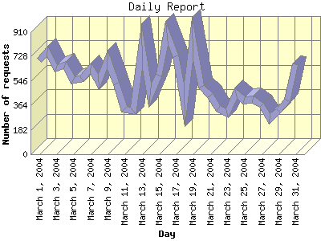

Report generated by Analog 5.91beta1 and Report Magic 2.21
|
Web Server Statistics for "Harish Narayanan (hnarayan) - March 2004" Report generated by Analog 5.91beta1 and Report Magic 2.21 |
The Daily Report identifies the activity for each day within the reporting period. Remember that one page hit can result in several server requests as the images for each page are loaded.

| Day | Number of requests | Number of bytes transferred | Percentage of the bytes | Percentage of the requests | |
|---|---|---|---|---|---|
| 1. | March 1, 2004 | 698 | 15.914 MB | 5.35% | 4.23% |
| 2. | March 2, 2004 | 766 | 14.618 MB | 4.91% | 4.64% |
| 3. | March 3, 2004 | 638 | 7.762 MB | 2.61% | 3.86% |
| 4. | March 4, 2004 | 663 | 12.132 MB | 4.08% | 4.01% |
| 5. | March 5, 2004 | 552 | 8.000 MB | 2.69% | 3.34% |
| 6. | March 6, 2004 | 560 | 9.301 MB | 3.12% | 3.39% |
| 7. | March 7, 2004 | 638 | 13.416 MB | 4.51% | 3.86% |
| 8. | March 8, 2004 | 536 | 7.107 MB | 2.39% | 3.25% |
| 9. | March 9, 2004 | 707 | 13.695 MB | 4.60% | 4.28% |
| 10. | March 10, 2004 | 529 | 8.655 MB | 2.91% | 3.20% |
| 11. | March 11, 2004 | 337 | 5.194 MB | 1.75% | 2.04% |
| 12. | March 12, 2004 | 326 | 5.089 MB | 1.71% | 1.97% |
| 13. | March 13, 2004 | 806 | 19.295 MB | 6.48% | 4.88% |
| 14. | March 14, 2004 | 438 | 6.904 MB | 2.32% | 2.65% |
| 15. | March 15, 2004 | 585 | 10.126 MB | 3.40% | 3.54% |
| 16. | March 16, 2004 | 903 | 9.855 MB | 3.31% | 5.47% |
| 17. | March 17, 2004 | 732 | 9.538 MB | 3.21% | 4.43% |
| 18. | March 18, 2004 | 363 | 2.611 MB | 0.88% | 2.20% |
| 19. | March 19, 2004 | 864 | 16.911 MB | 5.68% | 5.23% |
| 20. | March 20, 2004 | 502 | 6.666 MB | 2.24% | 3.04% |
| 21. | March 21, 2004 | 438 | 8.438 MB | 2.83% | 2.65% |
| 22. | March 22, 2004 | 340 | 9.170 MB | 3.08% | 2.06% |
| 23. | March 23, 2004 | 304 | 8.251 MB | 2.77% | 1.84% |
| 24. | March 24, 2004 | 457 | 9.229 MB | 3.10% | 2.77% |
| 25. | March 25, 2004 | 400 | 6.985 MB | 2.35% | 2.42% |
| 26. | March 26, 2004 | 409 | 11.226 MB | 3.77% | 2.48% |
| 27. | March 27, 2004 | 365 | 8.556 MB | 2.88% | 2.21% |
| 28. | March 28, 2004 | 262 | 6.669 MB | 2.24% | 1.59% |
| 29. | March 29, 2004 | 322 | 5.138 MB | 1.73% | 1.95% |
| 30. | March 30, 2004 | 403 | 9.308 MB | 3.13% | 2.44% |
| 31. | March 31, 2004 | 669 | 11.838 MB | 3.98% | 4.05% |
Most active day March 19, 2004 : 418 pages sent. 903 requests handled. 10,333,677.00 served.
Daily average: 532 requests handled. 9.600 MB served.
This report was generated on August 5, 2004 21:39.
Report time frame March 1, 2004 00:01 to March 31, 2004 23:44.
| Web statistics report produced by: | |
 Analog 5.91beta1 Analog 5.91beta1 |  Report Magic 2.21 Report Magic 2.21 |